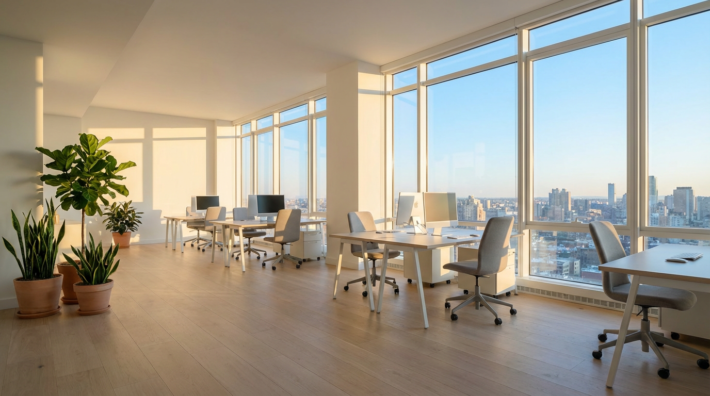

企業と未来を、つなぐ。
| 会社名 | ARCUS株式会社 |
|---|---|
| 設立 | 2019年4月 |
| 代表取締役 | 高橋 慎一 |
| 所在地 | 東京都渋谷区神宮前3-15-8 ARCUSビル5F |
| 電話番号 | 03-XXXX-XXXX |
| 資本金 | 1,000万円 |
| 従業員数 | 28名（2025年4月現在） |
| 事業内容 | DX戦略コンサルティング 業務システム開発 IT顧問・運用サポート |
大手コンサルティングファーム、SIer、スタートアップ出身のメンバーが在籍。多様なバックグラウンドを持つプロフェッショナルが、御社の課題に最適なチームを編成します。
エンジニア、コンサルタント、プロジェクトマネージャーが一体となり、戦略策定から実装・運用まで一貫して対応します。
東京都渋谷区神宮前3-15-8 ARCUSビル5F
東京メトロ「表参道駅」徒歩5分